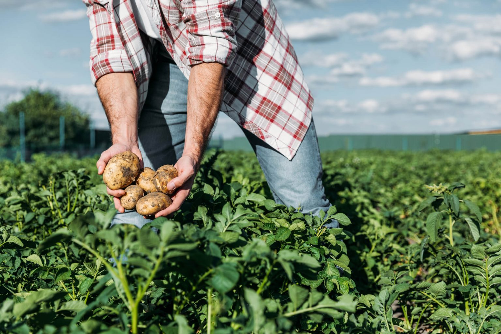
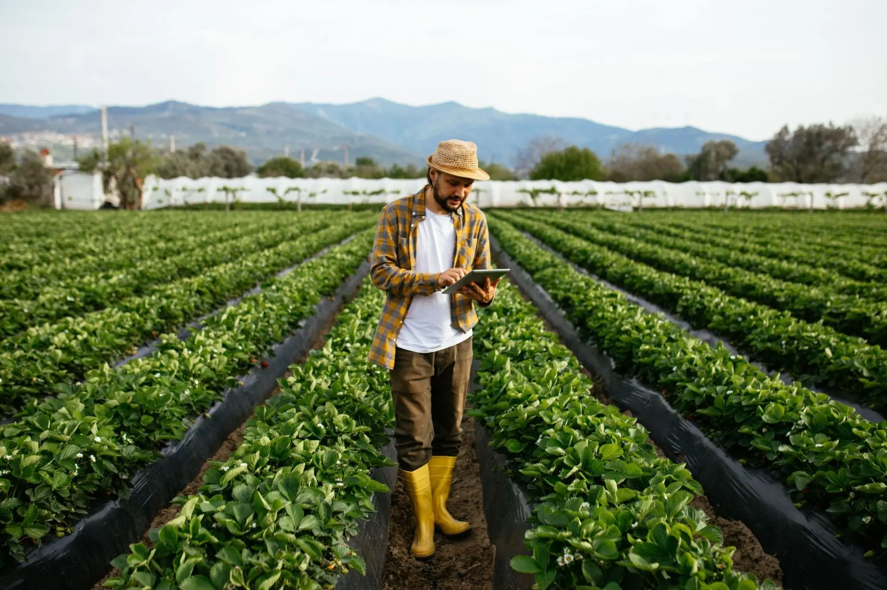

Home
Agricultura
IAs Generativas
Cultivo Eficiente
Contato
Aprenda agora sobre:

importância da Agricultura sustentável

IAs Generativas na produção e distribuição de alimentos
Modelos de Cultivo Eficiente
 Modelos de Cultivo Eficiente
Modelos de Cultivo Eficiente